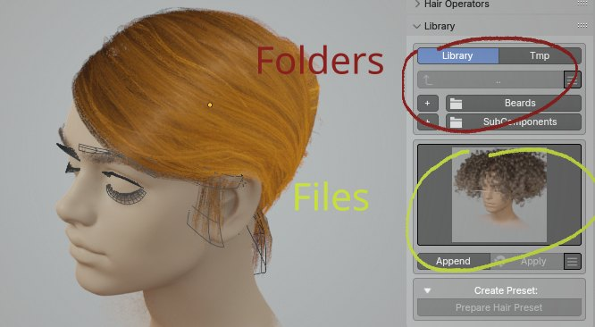
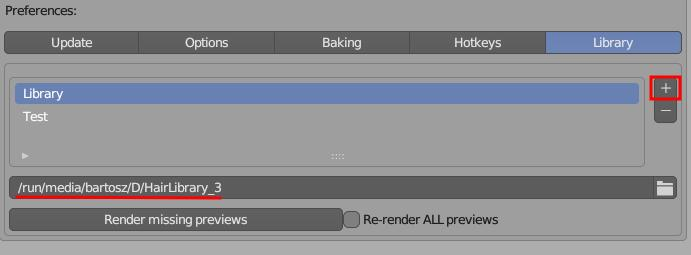
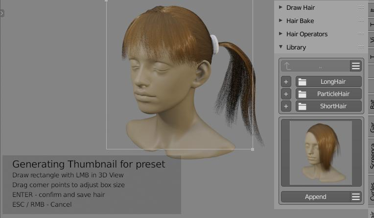

Hair Library¶
Hair library contains around 30 presets (male and female hairstyles), that you can import with few click into your project. You can also store your own presets with option to group them them into categories (folders).
Note: Sample library file - HairLibrary.zip - can be downloaded from Gumroad. Use the download link, that you got from Gumroad after you purchase, to get the library zip file, then unzip the HairLibrary.zip somewhere on your HD. Finally go to addon preferences and setup library path by entering extracted folder location.
- top half of Library panel is responsible for managing categories (folders),
- bottom for managing presets (files inside folder)

Library location¶
User Preferences -> Add ons -> Hair Tool -> Library tab.
Select target folder where library is located:

[☰] Categories menu¶
- Add, Delete, Rename category (folder)
Note - Renaming and Deleting categories requires selecting target folder with '+' button next to the category name.
[☰] Presets menu¶
- Add, Delete, Rename, Open active preset (the one that is currently displayed with thumbnail).
After importing preset with Append button you will often have to readjust position of imported hair objects to you character head. For grid surface type of hair - you can remove imported Curve Hair and reposition only grid surfaces. Then just regenerate curve hair again using Curves from grid mesh
Storing presets¶
To store preset:
- select objects you want to be saved in your preset (you can select multiple objects)
- open [☰] menu and click 'Store Preset'.
- Enter preset name in popup window (there will be warning if you try to override existing preset)
- outline capture region, in 3d View, which will be used for thumbnail generation - for that click and drag making rectangular shape in 3D Viewport. You can adjust the corners of captured area if you want. Finally press [Enter] to store preset. 